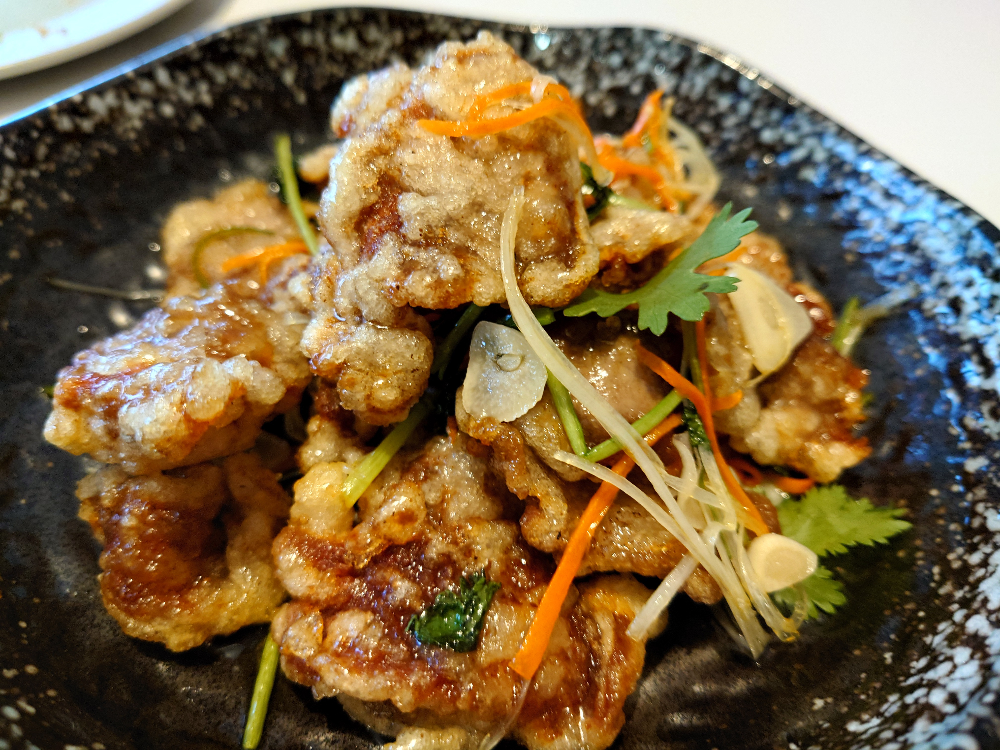
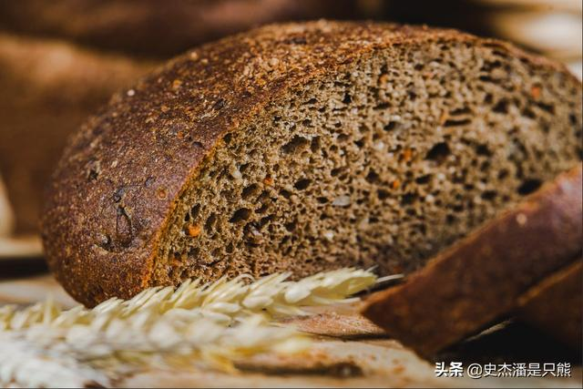
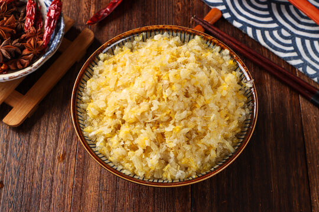
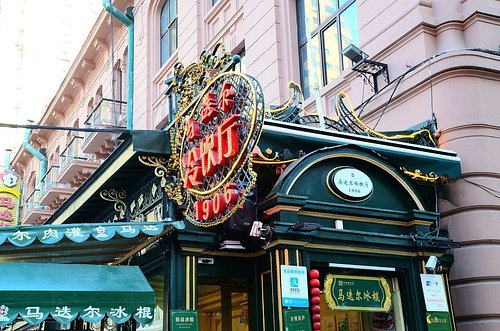

🍖 Flavors of the Northeast
The Trans-Siberian Table
When Russian engineers arrived in 1898 to build the Chinese Eastern Railway, they brought bread, sausage, and beer. Over a century later, Harbin's Red Sausage (Hong Chang) and Dalieba bread are more famous here than in Russia.
This guide covers both the Russian-influenced classics and the soul-warming Dongbei (Northeast) dishes that fuel the Ice City.
years of Russian culinary influence
Harbin Red Sausage (Hong Chang)
Smoked pork sausage with a distinct garlic bite. The aroma hits you before you enter the store. Locals eat it cold, sliced thin, with a chunk of Dalieba bread.

Guo Bao Rou
Crispy double-fried pork slices coated in a glossy sweet-and-sour sauce. Unlike American Chinese versions, this one uses potato starch for an extra crunch that holds up to the sauce.

Dalieba (Russian Bread)
A massive round sourdough loaf weighing up to 2kg, baked in a traditional Russian stone oven. The crust is hard, the inside dense and slightly sour — perfect for sopping up stew.
Di San Xian
"Three Earthly Treasures" — potato, eggplant, and green pepper — stir-fried separately then combined in a savory garlic sauce. Simple ingredients, life-changing flavor.

Suancha (Fermented Cabbage Stew)
Before refrigeration, Harbin families survived winter on fermented Napa cabbage. Stewed with pork belly and glass noodles, it's sour, rich, and deeply warming.

Madieer Ice Cream
Yes, ice cream in -30°C weather. This century-old shop sells popsicles that don't melt because it's so cold. The original milk flavor is creamy and dense — locals eat it while strolling the frozen street.